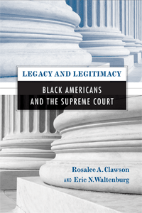

<body bgcolor="#FFFFFF" text="#000000" link="#0000FF" vlink="#CC0000" alink="#CC0000"><center><hr width="350" size="1" align="center" noshade>The first comprehensive examination of Black Americans’ attitudes toward the Supreme Court<hr width="350" size="1" align="center" noshade><p><a href="https://cdcshoppingcart.uchicago.edu/Cart/ChicagoBook.aspx?ISBN=9781592139026&&PRESS=temple" target="_top">Buy this book!</a> | <a href="https://cdcshoppingcart.uchicago.edu/Cart/Cart.aspx?PRESS=temple" target="_top">View Cart</a> | <a href="https://cdcshoppingcart.uchicago.edu/Cart/Cart.aspx?PRESS=temple" target="_top">Check Out</a></p><p></p></center><!--none//--><h1>Legacy and Legitimacy</h1>
<H2>Black Americans and the Supreme Court</H2>
<h3>Rosalee A. Clawson and Eric N. Waltenburg</h3>
<P>cloth 1-59213-902-7 $75.50, Dec 08, <FONT COLOR=#990033>Available</FONT>
<br>paper 1-59213-903-5 $28.95, Dec 08, <FONT COLOR=#990033>Available</FONT>
<br>Electronic Book 1-59213-904-3 $28.95 <FONT COLOR=#990033>Available</FONT>
<BR> 232 pp
5.5x8.25
28&nbsp;tables 6&nbsp;figures
</P><P>Thoroughly grounded in the latest scholarly literature, theoretical sources, and experimental results, <I>Legacy and Legitimacy</I> substantially advances understanding of Black Americans’ attitudes toward the Supreme Court, the Court’s ability to influence Blacks’ opinions about the legitimacy of public institutions and policies, and the role of media in shaping Blacks’ judgments.</P>
<P>Drawing on legitimacy theory—which explains the acceptance of or tolerance for controversial policies—the authors begin by reexamining the significance of “diffuse support” in establishing legitimacy. They provide a useful overview of the literature on legitimacy and a concise history of the special relationship between Blacks and the Court. They investigate the influences of group attitudes and media “framing.” And they employ data from large-scale surveys to show that Blacks with greater levels of diffuse support for the Court are more likely to adopt positions consistent with Court rulings.</P>
<P>With its broad scope and inclusion of new experimental findings, <I>Legacy and Legitimacy</I> will interest students and scholars of judicial politics, racial politics, media and politics, black studies and public opinion.</P>
<BR>&nbsp;<h2>Excerpt</h2><P>Excerpt available at <a href="http://www.temple.edu/tempress">www.temple.edu/tempress</a></p>
<BR>&nbsp;<h2>Reviews</h2>
<p><i>"The concept of political legitimacy as a stabilizing force is central to the book’s theme and is particularly important in a pluralist democracy such as the United States, where constituents regularly lodge competing demands, thereby placing stresses upon the political system. The authors seek to measure, through a series of extended surveys and intricate statistical analysis, the one institution of government that most effectively regulates pluralist conflicts and rallies support for the regime. They then conclude that relative to other institutions, the Supreme Court has the greatest capacity to legitimize policies. Recommended."</i>
<br>&#151<b><i>Library Journal</i></b>
<p><i>"One of the book's many strengths is its multidimensional approach to answering this core question: Why do African-Americans view the Court, and thus the U.S. regime, as legitimate? The authors provide a cogent, compact summary of Civil Rights history and how blacks' innovative public-interest-law strategy brought litigation to the federal courts.... [The] book's experimental, archival and survey data provides a more nuanced portrait of black attitudes toward the Supreme Court." </i>
<br>&#151<b><i>Perspectives on Politics</i></b>
<p><i>"[This] study of black Americans and the supreme court is a must-read for students of black politics, political behavior, and judicial politics."</i>
<br>&#151<b><i>Political Science Quarterly</i></b>
<p><i>"[T]his book should be of interest to scholars and students of the Court, public opinion, and American politics more broadly. Clawson and Waltenburg present a well researched book for scholars and students who wish to know about interactions between the Court and African Americans, the effect of decisions on public opinion, and understand the dynamics of diffuse support for the Court."</i><br>&#151<b><i>The Journal of Politics</i></b>
<BR>&nbsp;<h2>Contents</h2><P>
<br>Preface
<br>1. Legitimacy and American Democracy
<br>2. Blacks, Civil Rights, and the Supreme Court
<br>3. Establishing the Supreme Court's Legitimizing Capacity
<br>4. Different Presses, Different Frames: Black and Mainstream Press Coverage of a Supreme Court Decision
<br>5. Media Framing and the Supreme Court's Legitimizing Capacity
<br>6. The Supreme Court's Legitimizing Capacity among African Americans: Support for Capital Punsihment and Affirmative Action
<br>7. The Casual Relationship between Public Opinion toward the Court and Its Policies: The University of Michigan Affirmative Action Cases
<br>8. Conclusion
<br>Appendix A: Stimulus for Legitimacy Experiment
<br>Appendix B: List of Black Newspapers
<br>Appendix C: Stimulus for Media Framing Experiment
<br>Appendix D: Question Wording for Media Framing Experiment
<br>Appendix E: Blacks and the U.S. Supreme Court Survey
<br>Notes
<br>Reference
<br>Index
</P><BR>&nbsp;<H2>About the Author(s)</H2>
<table><tr><td valign="top"><img src="/tempress/authors/1995_au1.gif" height="90" width="75"></td><td width="100%" valign="middle"><p><B>Rosalee A. Clawson</B> is Associate Professor of Political Science at Purdue University and the co-author of <i>Public Opinion: Democratic Ideals, Democratic Practice</i>.</P></td></tr></table><table><tr><td valign="top"><img src="/tempress/authors/1995_au2.gif" height="90" width="75"></td><td width="100%" valign="middle"><p><B>Eric N. Waltenburg</B> is Associate Professor of Political Science at Purdue University and the author of <i>Choosing Where to Fight: Organized Labor and the Modern Regulatory State, 1948-1987</i>.</P></td></tr></table>
<BR><H2>Subject Categories</H2>
<p><A HREF="/tempress/political.html" TARGET="_top">Political Science and Public Policy</a>
<BR><A HREF="/tempress/african.html" TARGET="_top">African American Studies</a>
<BR><A HREF="/tempress/race.html" TARGET="_top">Race and Ethnicity</a>
</p>
<p align="center"><a href="https://cdcshoppingcart.uchicago.edu/Cart/ChicagoBook.aspx?ISBN=9781592139026&&PRESS=temple" target="_top">Buy this book!</a> | <a href="https://cdcshoppingcart.uchicago.edu/Cart/Cart.aspx?PRESS=temple" target="_top">View Cart</a> | <a href="https://cdcshoppingcart.uchicago.edu/Cart/Cart.aspx?PRESS=temple" target="_top">Check Out</a></p><p><font face="Arial" size="1"><a href="copyright.html" onMouseOver="window.status='Web Copyright Policy';return true;" onMouseOut="window.status=''" title="Web Copyright Policy">&copy;</a> 2015 <a href="http://www.temple.edu" target="new" onMouseOver="window.status='Link to Temple University home page';return true;" onMouseOut="window.status=''" title="Link to Temple University home page">Temple University</a>. All Rights Reserved. http://www.temple.edu/tempress/titles/1995_reg.html</font></p>